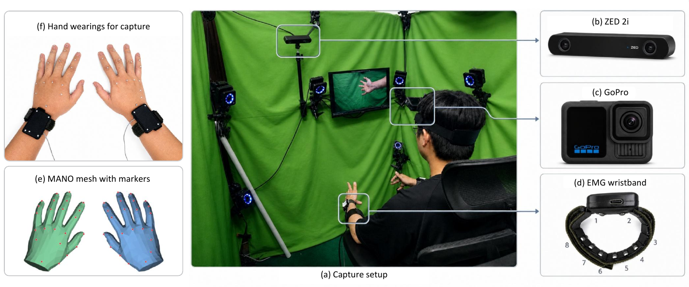
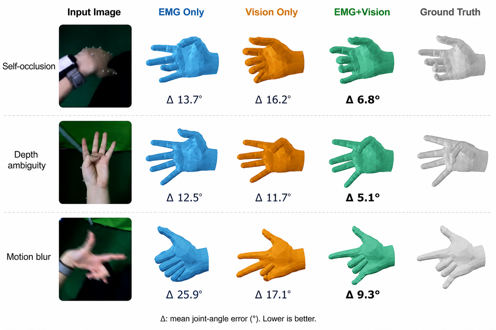
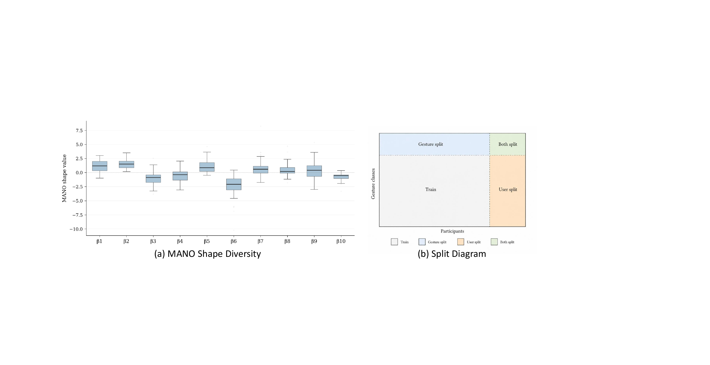
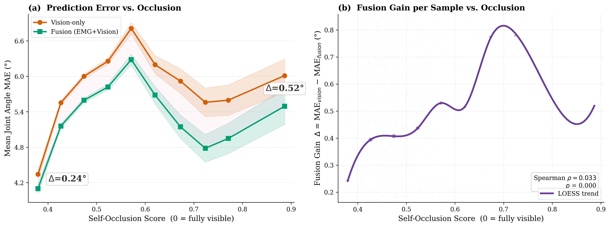

Abstract
A shared benchmark for when muscle activity and first-person vision see different parts of the same hand motion.
Surface EMG captures fine finger articulation even under occlusion and poor lighting, while egocentric vision provides global hand configuration and spatial context. EgoEMG synchronizes both signals with motion-capture-derived hand pose labels, enabling EMG-to-pose, vision-to-pose, and EMG+vision fusion to be evaluated under one 22-DoF joint-angle target.
Dataset
Synchronized bimanual sensing at scale

Capture
One recording, five aligned views of hand movement
EgoEMG records bilateral wristband EMG and IMU, wide-angle egocentric RGB, external ZED RGB-D video, and 21 reflective hand markers per hand. Labels are reconstructed into MANO parameters and converted to a unified 22-DoF hand angle representation with wrist articulation.
- 30 single-hand gestures and 30 bimanual gestures.
- Cross-gesture, cross-user, and combined held-out splits.
- 3.6% invalid-frame rate after learning-based marker-to-MANO reconstruction.
Benchmark
Three tasks, one label space
EMG-to-pose
EMGFormer maps raw EMG windows to per-frame joint angles with a TDS-style temporal frontend and RoPE Transformer decoder.
Vision-to-pose
ResNet, ViT, and WiLoR baselines regress the same 22-DoF target from single egocentric hand crops.
EMG+vision fusion
A residual fusion model starts from the visual estimate and learns EMG-driven corrections for pose details.
Results
Main findings
EMGFormer variants set a strong EMG-to-pose reference on EgoEMG, while hand-specialized vision remains the strongest single-frame visual baseline. Fusion improves matched lightweight vision models, especially when visual evidence is ambiguous.
| Method | Params | Gesture | User | Both | Avg. |
|---|---|---|---|---|---|
| EMGFormer-M | 6.6M | 11.8 | 15.6 | 17.4 | 14.2 |
| EMGFormer-S | 3.5M | 12.8 | 15.6 | 17.4 | 14.7 |
| vEMG2Pose | 6.0M | 15.0 | 16.3 | 17.3 | 15.9 |
| NeuroPose | 6.4M | 15.8 | 15.7 | 16.3 | 16.1 |
| Input | Method | Gesture | User | Both | Avg. |
|---|---|---|---|---|---|
| Vision | V-RN18 | 5.1 | 6.8 | 6.8 | 5.9 |
| EMG+Vision | F-RN18+S | 4.6 | 6.4 | 6.4 | 5.4 |
| Vision | V-RN152 | 4.3 | 6.1 | 6.1 | 5.1 |
| Vision | V-WiLoR | 3.9 | 5.6 | 5.7 | 4.7 |



Resources
Artifacts
Citation
BibTeX
@misc{xi2026egoemg,
title = {EgoEMG: A Multimodal Egocentric Dataset with Bilateral EMG and Vision for Hand Pose Estimation},
author = {Xi, Ziheng and Yu, Jiayi and Wang, Yitao and Duan, Yanbo and Feng, Jianjiang and Zhou, Jie},
year = {2026},
note = {Preprint}
}